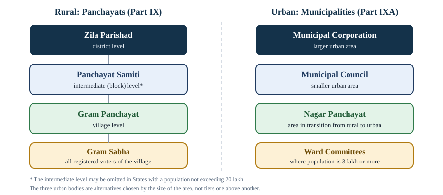

Chapter 9: Government in the States and Local Government¶
The Governor, the Chief Minister, State legislatures, Union Territories, and panchayats and municipalities
Learning outcomes
When you have finished this chapter you should be able to:
- describe the appointment, term, powers and position of the Governor, and distinguish the Governor's constitutional and situational discretion;
- explain the role of the Chief Minister and the State Council of Ministers;
- describe the composition and powers of the Legislative Assembly and the Legislative Council, and how a Council is created or abolished;
- outline how Union Territories are governed and list the main special provisions for particular States and areas;
- trace the history of local government in India up to the 73rd and 74th Amendments;
- state the compulsory and voluntary provisions of the 73rd Amendment and the main provisions of the 74th Amendment;
- discuss the strengths and weaknesses of local government in practice.
9.1 The State executive: the Governor¶
Part VI of the Constitution (Articles 152 to 237) deals with the States. The design follows that of the Union closely: a nominal head (the Governor), a real executive (the Council of Ministers headed by the Chief Minister) responsible to the lower House of the legislature, a legislature, and a High Court. The differences lie mainly in the Governor's office.
Appointment, term and removal¶
There is a Governor for each State, though the same person may be appointed Governor of two or more States (Article 153, as amended by the 7th Amendment, 1956). The Governor is appointed by the President by warrant under his hand and seal (Article 155), that is, in practice, by the Union government. The Governor must be a citizen and at least 35 years old (Article 157), must not be a member of a legislature or hold any office of profit (Article 158), and takes the oath before the Chief Justice of the State's High Court.
The Governor holds office during the pleasure of the President (Article 156). The normal term is five years, but the Governor may resign earlier or be removed by the President at any time, and continues in office until a successor takes over. The Constitution lays down no grounds or procedure for removal.
The pleasure doctrine and its limits
In B. P. Singhal v. Union of India (2010), the Supreme Court held that although the President's pleasure can be withdrawn at any time without giving reasons, it cannot be withdrawn arbitrarily, capriciously or unreasonably. A Governor cannot be removed merely because he or she is out of sympathy with the policies of the Union government or because a different party has come to power at the Centre. If a removal is challenged, the courts can examine it on limited grounds.
Two conventions are commonly followed in appointments: the Governor should be from outside the State, and the Chief Minister of the State should be consulted. The Sarkaria Commission recommended both, along with the suggestion that Governors should be eminent persons not closely connected with active politics.
The Governor's powers¶
The Governor's formal powers mirror the President's.
- Executive. All executive action of the State is taken in the Governor's name. The Governor appoints the Chief Minister and, on the Chief Minister's advice, the other ministers; the Advocate General; the State Election Commissioner; and the chairman and members of the State Public Service Commission (who can, however, be removed only by the President).
- Legislative. The Governor summons and prorogues the State legislature and can dissolve the Legislative Assembly; addresses the legislature; nominates one-sixth of the members of the Legislative Council, where there is one; gives or withholds assent to bills, returns them for reconsideration, or reserves them for the President (Article 200); and promulgates ordinances when the legislature is not in session (Article 213), on the same terms as the President's under Article 123.
- Financial. Money bills are introduced only with the Governor's recommendation; the State budget is laid before the legislature in the Governor's name; the Governor constitutes a State Finance Commission every five years for panchayats and municipalities.
- Judicial. Under Article 161, the Governor can grant pardons and other forms of clemency for offences against State laws. The Governor is consulted by the President in appointing High Court judges, and appoints district judges in consultation with the High Court.
Discretion¶
Article 163 says that the Governor shall act on the aid and advice of the Council of Ministers "except in so far as he is by or under this Constitution required to exercise his functions or any of them in his discretion", and that the Governor's decision on whether a matter falls within his discretion is final. This is a real difference from the President, who has no such clause.
The Governor's constitutional discretion covers matters such as:
- reserving a bill for the consideration of the President (Article 200);
- recommending President's rule by reporting to the President that the government of the State cannot be carried on in accordance with the Constitution (Article 356);
- acting as administrator of an adjoining Union Territory, if so appointed;
- certain functions under the Sixth Schedule, for example determining the amount payable by the State to an autonomous district council from mining royalties;
- special responsibilities under Article 371 and related articles in some States, such as Nagaland, Manipur, Sikkim and Arunachal Pradesh, and for development boards in parts of Maharashtra, Gujarat and Karnataka;
- seeking information from the Chief Minister on administrative and legislative matters (Article 167).
Like the President, the Governor also has situational discretion: in appointing a Chief Minister when no party has a clear majority in the Assembly, in dismissing a ministry that has lost the confidence of the Assembly and refuses to resign, and in deciding whether to dissolve the Assembly in such a situation.
Discretion is not a licence
The courts have narrowed the Governor's discretion. In S. R. Bommai (1994), the Supreme Court held that the majority of a ministry must be tested on the floor of the House, not by the Governor's personal assessment. In Nabam Rebia v. Deputy Speaker (2016), it held that the Governor cannot, on his own, summon or advance a session of the Assembly or interfere in its internal proceedings, except in limited circumstances. The Governor's role, the Court has repeatedly said, is that of a constitutional head who acts on ministerial advice save where the Constitution clearly says otherwise.
Worked example 9.1: A bill on the Governor's desk
Situation. The Legislative Assembly of a State with no Legislative Council passes a bill (not a money bill) that the Governor believes would reduce the powers of the High Court. What may the Governor do?
Answer. Under Article 200, the Governor has four options: assent; withhold assent; return the bill (with a message) for reconsideration, in which case, if the legislature passes it again, the Governor cannot withhold assent; or reserve it for the President. But for a bill that would so derogate from the powers of the High Court as to endanger its constitutional position, Article 200 makes reservation compulsory: the Governor must not assent to it, but must reserve it for the consideration of the President. The President may then assent or withhold assent, or direct that it be returned to the legislature for reconsideration (Article 201). On the question of time limits for these decisions, see the note in Chapter 5.
9.2 The Chief Minister and the Council of Ministers¶
The Chief Minister is appointed by the Governor (Article 164); by convention, the Governor appoints the leader of the party or coalition with a majority in the Legislative Assembly. The other ministers are appointed by the Governor on the Chief Minister's advice. A non-member may be appointed a minister but must become a member of the legislature within six months.
Under the 91st Amendment (2003), the total number of ministers, including the Chief Minister, must not exceed 15 per cent of the total strength of the Legislative Assembly, but must not be less than twelve (Article 164(1A)). The Council of Ministers is collectively responsible to the Legislative Assembly (Article 164(2)). The Chief Minister must communicate the decisions of the Council to the Governor and furnish information the Governor asks for (Article 167).
The Chief Minister's position in the State resembles that of the Prime Minister at the Centre: head of the Council of Ministers, leader of the majority in the Assembly, chief adviser to the Governor, and the chief spokesperson of the State government. In addition, the Chief Minister represents the State in bodies such as the Inter-State Council, the Governing Council of NITI Aayog and the Zonal Councils.
The Advocate General (Article 165) is the State's highest law officer. He or she must be qualified to be a High Court judge, is appointed by the Governor and holds office during the Governor's pleasure, and has the right to speak in the State legislature without a vote.
9.3 The State legislature¶
One House or two¶
Every State has a Legislative Assembly (Vidhan Sabha). Some States also have a Legislative Council (Vidhan Parishad), forming a bicameral legislature (Article 168). At the time of writing, six States have Councils: Andhra Pradesh, Bihar, Karnataka, Maharashtra, Telangana and Uttar Pradesh.
A Council may be created or abolished by Parliament by law, if the Legislative Assembly of the State passes a resolution to that effect by a majority of its total membership and two-thirds of the members present and voting (Article 169). Such a law is not a constitutional amendment for the purposes of Article 368 and is passed by a simple majority.
Composition¶
- The Legislative Assembly consists of not more than 500 and not less than 60 members, directly elected from territorial constituencies (Article 170). Some small States have been allowed fewer members by law; for example, Sikkim's Assembly has 32 members and those of Goa and Mizoram have 40. Its normal term is five years, and it may be dissolved earlier. Seats are reserved for Scheduled Castes and Scheduled Tribes, and (after the next delimitation) one-third will be reserved for women.
- The Legislative Council has not more than one-third of the total membership of the Assembly and not less than 40 members (Article 171). It is a permanent body; one-third of its members retire every second year, and each serves six years. Its members are chosen as follows:
| Share | Chosen by |
|---|---|
| One-third | Members of local bodies (municipalities, district boards and similar authorities) |
| One-twelfth | Graduates of at least three years' standing residing in the State |
| One-twelfth | Teachers of at least three years' standing in institutions of secondary level or higher |
| One-third | Members of the Legislative Assembly, from among persons who are not members of the Assembly |
| One-sixth (the rest) | Nominated by the Governor from persons with special knowledge or practical experience of literature, science, art, the co-operative movement and social service |
Table 9.1. Composition of a Legislative Council.
The minimum age is 25 for the Assembly and 30 for the Council. The presiding officers are the Speaker (and Deputy Speaker) of the Assembly and the Chairman (and Deputy Chairman) of the Council, each elected by the House from among its members.
The Council's limited powers¶
The Legislative Council is much weaker than the Rajya Sabha.
- A money bill can be introduced only in the Assembly. The Council must return it within 14 days, with recommendations that the Assembly may accept or reject, as in Parliament.
- For an ordinary bill passed by the Assembly, if the Council rejects it, or does not pass it within three months, or proposes amendments the Assembly does not accept, the Assembly may pass it again. If the Council then rejects it, or does not pass it within one month, or proposes unacceptable amendments, the bill is deemed passed in the form the Assembly passed it the second time (Article 197). The Council can therefore delay an ordinary bill by at most about four months, but cannot stop it.
- There is no joint sitting in a State legislature.
- The Council of Ministers is responsible only to the Assembly.
Worked example 9.2: How long can a Council delay a bill?
Situation. A bill passed by the Assembly of a bicameral State is sent to the Council on 1 March. The Council does nothing. What happens?
Answer. If the Council has not passed the bill within three months, by about 1 June, the Assembly may pass it again (with or without amendments suggested by the Council). Suppose it does so on 10 June and sends it back. If the Council again does nothing for one month, by about 10 July, the bill is deemed passed by both Houses in the form in which the Assembly passed it the second time. It then goes to the Governor for assent. The Council has delayed the bill but not defeated it.
9.4 Union Territories and special provisions¶
Union Territories¶
Union Territories are administered by the President through an administrator appointed by the President, with whatever designation the President chooses, such as Lieutenant Governor or Administrator (Article 239). Parliament can make laws for them on any subject, including subjects in the State List.
Three Union Territories have legislatures and councils of ministers.
- Delhi, the National Capital Territory, under Article 239AA (inserted by the 69th Amendment, 1991), has a Legislative Assembly that may make laws on State and Concurrent List subjects except public order, police and land. The relationship between the elected government and the Lieutenant Governor has been the subject of Constitution Bench judgments of the Supreme Court (in 2018 and 2023) and of later legislation by Parliament.
- Puducherry has a legislature created by Parliament under Article 239A.
- Jammu and Kashmir became a Union Territory with a legislature under the Jammu and Kashmir Reorganisation Act, 2019.
The other Union Territories (the Andaman and Nicobar Islands, Chandigarh, Dadra and Nagar Haveli and Daman and Diu, Ladakh and Lakshadweep) have no legislature.
Article 370
Article 370, a "temporary provision" in Part XXI, gave the former State of Jammu and Kashmir a special status: most provisions of the Constitution applied to it only as modified by Presidential orders, with the concurrence of the State government, and it had its own constitution. In August 2019, by a Presidential order and a resolution of Parliament, all provisions of the Constitution were applied to Jammu and Kashmir and the special status ended; the Jammu and Kashmir Reorganisation Act, 2019 divided the State into two Union Territories. In In re Article 370 of the Constitution (December 2023), a Constitution Bench of the Supreme Court unanimously upheld these steps. It also directed that statehood be restored as soon as possible and that elections to the Legislative Assembly be held by 30 September 2024; those elections took place in September and October 2024.
Special provisions for some States¶
Articles 371 to 371J contain special provisions for particular States, reflecting historical agreements and regional needs. Examples:
- Article 371: development boards for regions of Maharashtra and Gujarat, for which the Governor has special responsibility.
- Article 371A: in Nagaland, no Act of Parliament on the religious or social practices of the Nagas, Naga customary law and procedure, civil and criminal justice according to customary law, or the ownership and transfer of land applies unless the State Assembly so decides.
- Articles 371B to 371I: provisions for Assam, Manipur, Andhra Pradesh (and Telangana), Sikkim, Mizoram, Arunachal Pradesh and Goa.
- Article 371J (98th Amendment, 2012): a development board and reservation in education and employment for the Hyderabad-Karnataka region.
Scheduled and tribal areas¶
- The Fifth Schedule deals with the administration of Scheduled Areas and Scheduled Tribes in States other than Assam, Meghalaya, Tripura and Mizoram. A Tribes Advisory Council advises on tribal welfare, and the Governor may direct that a law shall not apply, or apply with modifications, to a Scheduled Area, and may make regulations for its peace and good government.
- The Sixth Schedule provides for autonomous district councils in the tribal areas of Assam, Meghalaya, Tripura and Mizoram, with powers to make laws on matters such as land, forests, inheritance and social customs, to administer justice in certain cases, and to levy some taxes.
9.5 Local government: the background¶
Democracy is not complete if it stops at the Union and the States. Many matters of daily life, such as drinking water, local roads, sanitation, primary schools and markets, are best handled close to the people who use them. Local self-government means the management of local affairs by bodies elected by the local people.
Local bodies have a long history in India. Village councils existed in many forms for centuries. In the colonial period, a resolution of 1882 associated with the Viceroy Lord Ripon encouraged elected local boards, and Ripon is often called the father of local self-government in India. The Constitution as adopted, however, mentioned village panchayats only in a Directive Principle, Article 40, which asks the State to organise them and give them the powers needed to function as units of self-government. Local government was a State subject, and its fortunes depended on each State's laws.
| Year | Step |
|---|---|
| 1952–53 | Community Development Programme and National Extension Service launched |
| 1957 | Balwant Rai Mehta Committee recommends "democratic decentralisation" through a three-tier system: gram panchayat (village), panchayat samiti (block) and zila parishad (district) |
| 1959 | Rajasthan becomes the first State to establish Panchayati Raj (inaugurated at Nagaur on 2 October 1959) |
| 1977–78 | Ashok Mehta Committee recommends a two-tier system and open participation of political parties |
| 1986 | L. M. Singhvi Committee recommends constitutional recognition of panchayats |
| 1989 | 64th Amendment Bill passed by the Lok Sabha but defeated in the Rajya Sabha |
| 1992 | 73rd and 74th Amendments passed |
| 1993 | 73rd Amendment in force on 24 April 1993 (now National Panchayati Raj Day); 74th on 1 June 1993 |
Table 9.2. Milestones in local government.
By the 1980s, panchayats had declined in many States: elections were postponed for years, bodies were superseded, and they had little money or power. The 73rd and 74th Amendments were designed to give local bodies constitutional status, regular elections and a guaranteed share in power.
9.6 Panchayats: the 73rd Amendment¶
The 73rd Amendment (1992) added Part IX (Articles 243 to 243-O), titled "The Panchayats", and the Eleventh Schedule, which lists 29 subjects that may be devolved to panchayats. Its provisions are of two kinds: compulsory provisions, which every State law must include, and voluntary provisions, which States may adopt at their discretion.

Compulsory provisions¶
- Gram Sabha (Article 243A): a body of all persons registered on the electoral rolls of a village, exercising such powers as the State legislature gives it.
- Three tiers (Article 243B): panchayats at the village, intermediate and district levels. A State with a population not exceeding 20 lakh need not have the intermediate level.
- Direct election of all members at all levels (Article 243C). The chairpersons of the intermediate and district panchayats are elected indirectly, by and from among the elected members.
- Minimum age of 21 years for membership (Article 243F).
- Reservation (Article 243D): seats for Scheduled Castes and Scheduled Tribes in proportion to their share of the population, at every level; not less than one-third of the seats (including those reserved for SCs and STs) for women; and reservation of the offices of chairpersons for SCs, STs and women in the same way. Many States have raised the reservation for women to one-half.
- Term of five years (Article 243E). If a panchayat is dissolved earlier, elections must be held within six months.
- State Election Commission (Article 243K) to conduct panchayat elections, appointed by the Governor and removable only like a High Court judge.
- State Finance Commission (Article 243I), constituted by the Governor every five years, to review the finances of panchayats and recommend the sharing of State taxes and grants.
- Audit of panchayat accounts as provided by State law (Article 243J), and a bar on courts interfering in electoral matters except through election petitions (Article 243-O).
Voluntary provisions¶
- representation of members of Parliament and of the State legislature in panchayats;
- reservation of seats and offices for backward classes;
- the extent to which panchayats are given powers and functions to work as institutions of self-government, including the preparation and implementation of plans on the subjects of the Eleventh Schedule (Article 243G);
- the financial powers of panchayats to levy taxes, duties, tolls and fees (Article 243H).
Key idea
The 73rd Amendment made the existence, elections, reservations and term of panchayats compulsory, and created State Election Commissions and State Finance Commissions to protect them. But how much power and money panchayats actually get is left to each State, and this is where practice differs most.
The Eleventh Schedule's 29 subjects include agriculture and land improvement, minor irrigation, animal husbandry and fisheries, social forestry and minor forest produce, small-scale and cottage industries, rural housing, drinking water, roads, rural electrification, poverty alleviation, primary and secondary education, adult education, libraries, health and sanitation, women and child development, social welfare, the public distribution system and the maintenance of community assets.
Exemptions and PESA¶
Under Article 243M, Part IX does not apply to Nagaland, Meghalaya and Mizoram, to the Scheduled Areas and the tribal areas of the Sixth Schedule, and to certain hill areas, which have their own institutions. Parliament extended Part IX to the Fifth Schedule areas, with modifications, by the Provisions of the Panchayats (Extension to the Scheduled Areas) Act, 1996, known as PESA. It gives the Gram Sabha in these areas special powers: for example, to safeguard community resources and customary modes of dispute resolution, to approve development plans, to be consulted before land is acquired, and to own minor forest produce.
Worked example 9.3: Reserving seats in a panchayat
Situation. A gram panchayat has 15 elected seats. Scheduled Castes form 20 per cent and Scheduled Tribes 7 per cent of the village population. The State law provides only the minimum reservation for women required by the Constitution. How many seats must be reserved?
Answer.
- Scheduled Castes: in proportion to population, as nearly as may be: \(0.20 \times 15 = 3\) seats.
- Scheduled Tribes: \(0.07 \times 15 = 1.05\), so 1 seat.
- Women: at least one-third of the total, \(\tfrac{1}{3} \times 15 = 5\) seats. Within the SC seats, at least one-third must go to SC women: one of the three SC seats. (For a single ST seat, one-third is less than one; States handle such fractions through their rules, usually by rotating the women's seat between elections.) The seats for SC and ST women count towards the total of five, so at least four further seats, or three if the ST seat also goes to a woman, are reserved for women from the general seats.
Reserved seats are rotated among the wards of the panchayat at successive elections.
9.7 Municipalities: the 74th Amendment¶
The 74th Amendment (1992) added Part IXA (Articles 243P to 243ZG), titled "The Municipalities", and the Twelfth Schedule, which lists 18 subjects for municipalities. Its provisions parallel those for panchayats, with features suited to towns and cities.
- Three kinds of municipality (Article 243Q): a Nagar Panchayat for an area in transition from rural to urban, a Municipal Council for a smaller urban area, and a Municipal Corporation for a larger urban area. The Governor decides the category, considering population, density, revenue, employment in non-agricultural activities and other factors. An industrial township may be exempted.
- Composition (Article 243R): members directly elected from wards. The State may also provide for representation of persons with special knowledge of municipal administration (without voting rights), and of MPs and MLAs.
- Ward committees (Article 243S) in municipalities with a population of three lakh or more.
- Reservation for SCs, STs and women (not less than one-third) on the same lines as panchayats (Article 243T).
- Term of five years, with elections within six months of a premature dissolution (Article 243U).
- The State Finance Commission and State Election Commission serve municipalities as well (Articles 243Y and 243ZA).
- A District Planning Committee in every district consolidates the plans of panchayats and municipalities (Article 243ZD).
- A Metropolitan Planning Committee prepares a draft development plan for each metropolitan area, defined as an area with a population of ten lakh or more (Article 243ZE).
The Twelfth Schedule's 18 subjects include urban planning, regulation of land use and construction of buildings, roads and bridges, water supply, public health, sanitation and solid waste management, fire services, urban forestry and the environment, slum improvement, urban poverty alleviation, parks and playgrounds, burial and cremation grounds, registration of births and deaths, public amenities such as street lighting, and slaughterhouses.
| Feature | Panchayats (73rd) | Municipalities (74th) |
|---|---|---|
| Part and articles | IX, 243–243-O | IXA, 243P–243ZG |
| Schedule and subjects | Eleventh, 29 | Twelfth, 18 |
| Structure | Three tiers: village, intermediate, district | Three types by size: nagar panchayat, municipal council, municipal corporation |
| Assembly of all voters | Gram Sabha | None (ward committees in large cities) |
| Planning body | District Planning Committee | District and Metropolitan Planning Committees |
| In force | 24 April 1993 | 1 June 1993 |
Table 9.3. The 73rd and 74th Amendments compared.
Other urban bodies exist outside Part IXA, such as cantonment boards (under the Cantonments Act, 2006), township authorities, port trusts and special-purpose agencies for housing or water supply.
9.8 Local government in practice¶
Three decades after the 73rd and 74th Amendments, local government is far more firmly established than before. Regular elections have been held in most States, and several million representatives are elected to local bodies, a large share of them women and members of the Scheduled Castes and Scheduled Tribes. Many observers see this as one of the largest experiments in grassroots democracy anywhere.
The weaknesses are usually summarised as the problem of the three Fs: functions, funds and functionaries.
- Functions. Many States have not transferred the Eleventh and Twelfth Schedule subjects in full, or have kept parallel State bodies doing the same work.
- Funds. Local bodies raise little revenue of their own and depend on grants from the Union and the States, often tied to specific schemes. Finance Commissions at both levels have recommended grants to local bodies, but the recommendations of State Finance Commissions have not always been acted on.
- Functionaries. Local bodies often lack their own staff and depend on State officials who answer to State departments.
Other concerns include delays in local elections in some States, the influence of family members over women representatives in some places (sometimes called proxy representation), and limited capacity for planning. On the other hand, the reservation of seats has brought large numbers of women and members of disadvantaged groups into public life, and studies have found that this can change the priorities of local spending.
Summary
- The Governor, appointed by the President and holding office during the President's pleasure (subject to B. P. Singhal, 2010), is the constitutional head of the State and acts on ministerial advice except where the Constitution gives discretion (Article 163), notably in reserving bills and recommending President's rule.
- The Chief Minister heads a Council of Ministers of at most 15 per cent of the Assembly (minimum 12), collectively responsible to the Assembly.
- Every State has a Legislative Assembly (60 to 500 members, with exceptions); six have Legislative Councils, created or abolished by Parliament on an Assembly resolution (Article 169). The Council can delay an ordinary bill for about four months and a money bill for 14 days, but cannot defeat either.
- Union Territories are administered by the President through administrators; Delhi, Puducherry and Jammu and Kashmir have legislatures. Articles 371 to 371J, and the Fifth and Sixth Schedules, make special provisions for certain States and tribal areas.
- After the Balwant Rai Mehta, Ashok Mehta and L. M. Singhvi committees, the 73rd and 74th Amendments (1992) gave constitutional status to panchayats (three tiers, Gram Sabha, Eleventh Schedule with 29 subjects) and municipalities (three types, Twelfth Schedule with 18 subjects), with five-year terms, reservation for SCs, STs and women, State Election Commissions and State Finance Commissions.
- In practice, local democracy has deepened, but devolution of functions, funds and functionaries remains incomplete.
9.9 Exercises¶
Exercise 1
How does Article 163 make the Governor's position different from the President's?
Answer
Article 163 says that the Governor acts on ministerial advice "except in so far as he is by or under this Constitution required to exercise his functions ... in his discretion", and that the Governor's decision on whether a matter is within his discretion is final. There is no equivalent clause for the President, who must act on advice under Article 74 (with only the power to return it once).
Exercise 2
Name the six States that have Legislative Councils, and state the procedure for creating a new Council.
Answer
Andhra Pradesh, Bihar, Karnataka, Maharashtra, Telangana and Uttar Pradesh (at the time of writing). The State's Legislative Assembly must pass a resolution by a majority of its total membership and two-thirds of the members present and voting; Parliament then passes a law by simple majority (Article 169). This is not a constitutional amendment under Article 368.
Exercise 3
A State Legislative Assembly has 180 members. What are the maximum and minimum sizes of its Legislative Council, if it has one?
Answer
Maximum: one-third of 180 = 60. Minimum: 40 (Article 171).
Exercise 4
List five compulsory provisions of the 73rd Amendment.
Answer
Any five of: a Gram Sabha in every village; three tiers (village, intermediate, district), with the intermediate tier optional for States with population up to 20 lakh; direct election of members at all levels; indirect election of chairpersons at the intermediate and district levels; minimum age of 21; reservation of seats for SCs and STs in proportion to population; at least one-third of seats and chairpersons' offices for women; a five-year term with elections within six months of dissolution; a State Election Commission; a State Finance Commission every five years.
Exercise 5
What are the three kinds of municipality under the 74th Amendment, and who decides which kind an area gets?
Answer
A Nagar Panchayat (area in transition from rural to urban), a Municipal Council (smaller urban area) and a Municipal Corporation (larger urban area). The Governor specifies the category, considering population, density, revenue, non-agricultural employment and other factors.
Exercise 6
What is PESA, and what does it do?
Answer
The Provisions of the Panchayats (Extension to the Scheduled Areas) Act, 1996. It extends Part IX of the Constitution, with modifications, to the Fifth Schedule (Scheduled) Areas, and gives the Gram Sabha there special powers, such as safeguarding community resources and customs, approving development plans, being consulted before land acquisition, and owning minor forest produce.
9.10 Quiz¶
Check yourself: States and local government
Exercise 1
Who appoints the Governor of a State?
- The Chief Minister
- The President
- The Chief Justice of the High Court
- The State Legislative Assembly
Answer
The President
Exercise 2
Which article allows the Governor to promulgate ordinances?
- Article 123
- Article 161
- Article 200
- Article 213
Answer
Article 213
Exercise 3
For at most how long can a Legislative Council delay an ordinary bill?
- 14 days
- About two months
- About four months
- Six months
Answer
About four months
Exercise 4
The Eleventh Schedule lists ___ subjects for panchayats.
Answer
29 / twenty-nine
Exercise 5
Which committee first recommended a three-tier Panchayati Raj system?
- Ashok Mehta Committee
- Balwant Rai Mehta Committee
- L. M. Singhvi Committee
- Sarkaria Commission
Answer
Balwant Rai Mehta Committee
Exercise 6
What is the minimum age for membership of a panchayat?
- 18
- 21
- 25
- 30
Answer
21
Exercise 7
Match each body with its constitutional basis.
| A | B |
|---|---|
| Gram Sabha | Article 243K |
| State Finance Commission | Article 243ZE |
| State Election Commission | Article 243A |
| Metropolitan Planning Committee | Article 243I |
Answer
Gram Sabha — Article 243A; State Finance Commission — Article 243I; State Election Commission — Article 243K; Metropolitan Planning Committee — Article 243ZE
Exercise 8
Ward committees must be set up in municipalities with a population of at least...
- 1 lakh
- 3 lakh
- 10 lakh
- 20 lakh
Answer
3 lakh